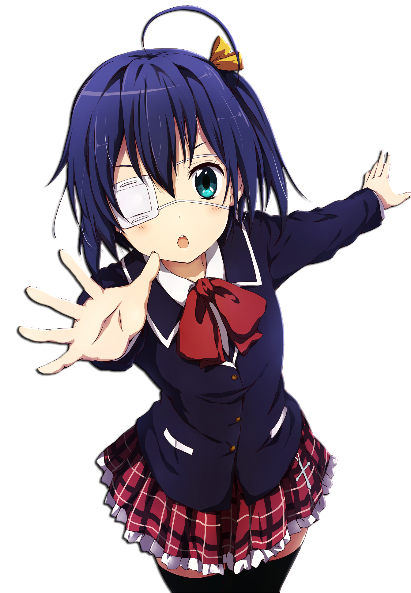
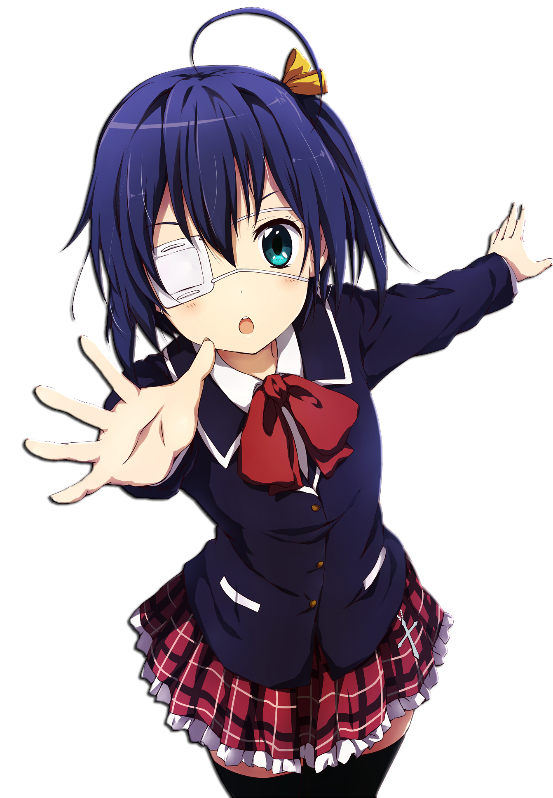
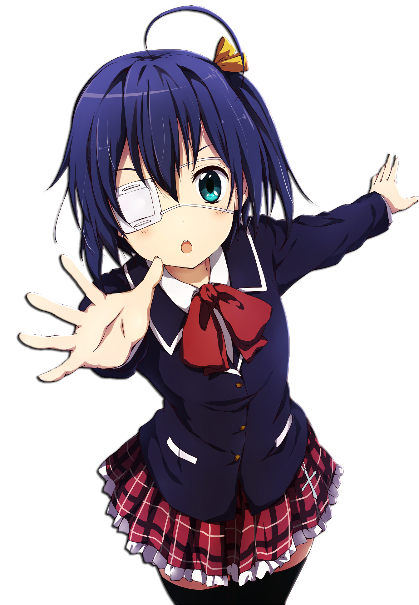

ZONA DE VIDEOS
 

La historia de la serie se centra en Subaru Natsuki, un hikikomori que de repente se ve transportado a otro mundo en su camino a casa desde la tienda de conveniencia, hasta que de repente, descubre que no tiene ningún poder especial más allá de poder esquivar a la muerte a través de una especie de bucle temporal, reviviéndolo en el lugar dónde todo había comenzado previamente. Media Factory ha publicado veintisiete volúmenes desde el 25 de enero del 2014 bajo su imprenta MF Bunko J. Ha recibido cuatro adaptaciones a manga y una adaptación de 25 episodios a anime por White Fox se emitió entre el 4 de abril hasta el 18 de septiembre del 2016.
La trama principal se sitúa en una época medieval y sigue las aventuras del escuadrón de caballeros conocidos como los siete pecados capitales que actúan como los protectores de Britannia, de la opresión, y al mismo tiempo buscan la redención por pecados que les confirieron sus títulos.Durante una época medieval en el reino de Liones la tercera princesa del reino Elizabeth Liones en su afán por liberar a las personas del abuso de poder y opresión que los caballeros sagrados ejercen. La princesa huye de su hogar para ir en la búsqueda de los legendarios siete pecados capitales, por lo que usando una armadura oxidada Elizabeth vaga sin rumbo hasta que llega a una cantina llamada Boar's Hat (el sombrero del jabalí) donde conoce al dueño Meliodas, un joven que aparenta ser un adolescente y que tiene un poder oculto y a Hawk un cerdo con la particular habilidad de hablar. Meliodas a pesar de conocer en poco tiempo a Elizabeth se compromete a ayudarla en su travesía por encontrar y reunir a los pecados al revelar que él en realidad es el pecado de la ira y el líder de dicha orden de caballeros.
Kazuya Kinoshita se siente devastado luego de que su novia, Mami Nanami, lo dejase después de salir durante un mes. Entonces, él decide utilizar una aplicación en línea en la cual alquila a una novia llamada Chizuru Mizuhara, una chica hermosa y atractiva. Sin embargo, debido a que ella aparenta ser demasiado perfecta, él le escribe una mala reseña, por lo que Chizuru lo regaña y revela que es peor de lo que esperaba. Sin embargo, cuando la abuela de Kazuya se derrumba en el hospital, él la lleva consigo y su abuela se enamora de lo genial que es. Kazuya continúa alquilando a Chizuru para mantener las apariencias con su familia y amigos, pero las cosas se complican cuando descubren que son vecinos en los apartamentos donde viven y además asisten a la misma universidad. Más tarde, otras chicas del negocio de las novias de alquiler también se unen para salir y mostrar interés en Kazuya.
Mientras la oficinista y programadora Kobayashi se prepara para trabajar, es recibida por un gran dragón justo afuera de la puerta de su departamento. El dragón se transforma inmediatamente en una chica humana con un traje de sirvienta y se presenta como Tohru. Resulta que durante una excursión en la que Kobayashi estaba borracha en las montañas la noche anterior, se había encontrado con la dragona, que decía haber venido de otro mundo. Posteriormente, Kobayashi había quitado una espada sagrada de la espalda de Tohru, ganándose su gratitud. Como Tohru no tiene un lugar donde quedarse, Kobayashi se ofrece a dejar que la dragona se quede en su casa y se convierta en su sirvienta personal, a lo que ella acepta.
